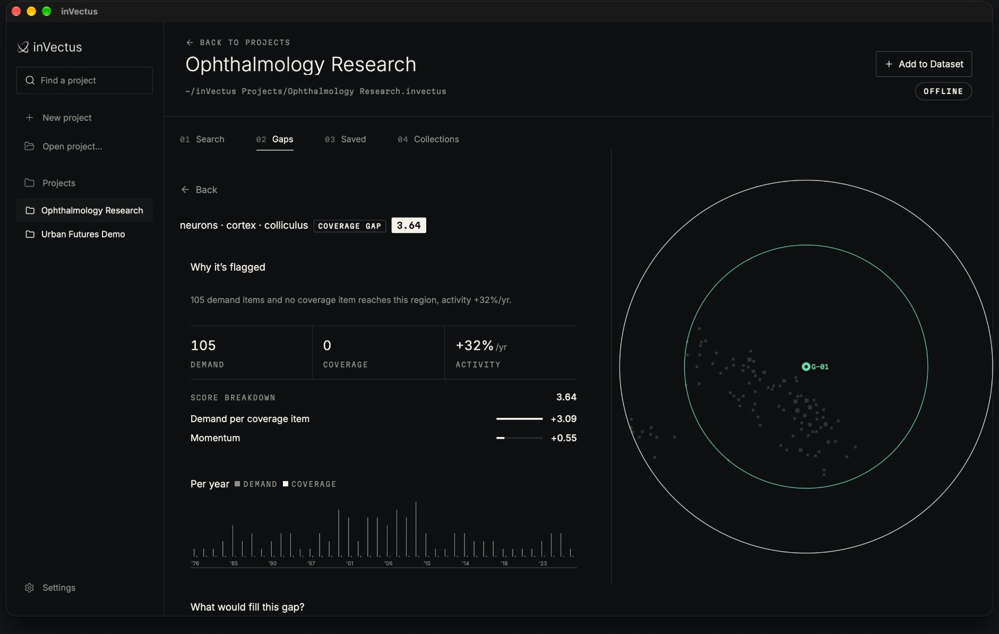

Exhibits
Public betaon iPhone
Angrove
A private study app for philosophy and theology.
Conversations, notes, and related ideas stay together on your iPhone or Mac.
- Platform
- iPhone & Mac
- Built with
- SwiftUI
Product site ↗Case study ↗Source ↗
Design notes
A board for your notes
Notes live together on a named board. Here, two columns of writing sit beneath a shared visual reference.
Room for a visual reference
An image shares the workspace with the writing. The board can hold more than a sequence of chat messages.
Navigation stays close
Boards sit alongside conversations, the library, and study topics in the same sidebar.
More screens

In development
inVectus
A local-first research tool for Mac.
Map a collection of papers, find gaps in its coverage, and inspect the evidence behind each one.
- Platform
- Mac
- Built with
- React, TypeScript, Rust
Design notes
A score you can inspect
Demand, coverage, and activity appear above the score breakdown. The numbers behind a flagged gap remain visible.
The gap has a place
The selected gap stays marked on the collection map beside its evidence. Its position can be read in the context of the other papers.
A collection, not a universal claim
The flag describes coverage within this collection. It does not establish that an idea is globally novel.


Observations
-
Show the numbers behind a judgmentinVectus
When software makes a call for you, its reasoning belongs on the same screen. A flagged gap in inVectus shows demand, coverage, and activity above the score, so the verdict can be checked rather than trusted.
-
A claim should name its scopeinVectus
Wording is interface. “A gap in this collection” and “a novel idea” look alike in a label and mean very different things. The copy has to say which one the software can actually support.
-
Notes want a place, not a scrollAngrove
A chat is a sequence; study is spatial. Giving notes a named board, with room for an image beside the writing, lets ideas sit next to each other instead of scrolling away.
-
Test the default before choosing itAngrove
Most people never change a default, so the default is the product. Before choosing Angrove’s, I ran it through an 80-case evaluation.
-
Keep the way back within reachAngrove
Boards, conversations, the library, and study topics share one sidebar. Moving between kinds of work should never feel like leaving the room.
Experience
| Years | Company | Role |
|---|---|---|
| 2024 to now | PostcardMania | Web designer |
| 2024 | Cloud Carpenter | Front-end intern |
Tools
Figma, SwiftUI, React, TypeScript, Rust, HTML & CSS, Python, SQLite.